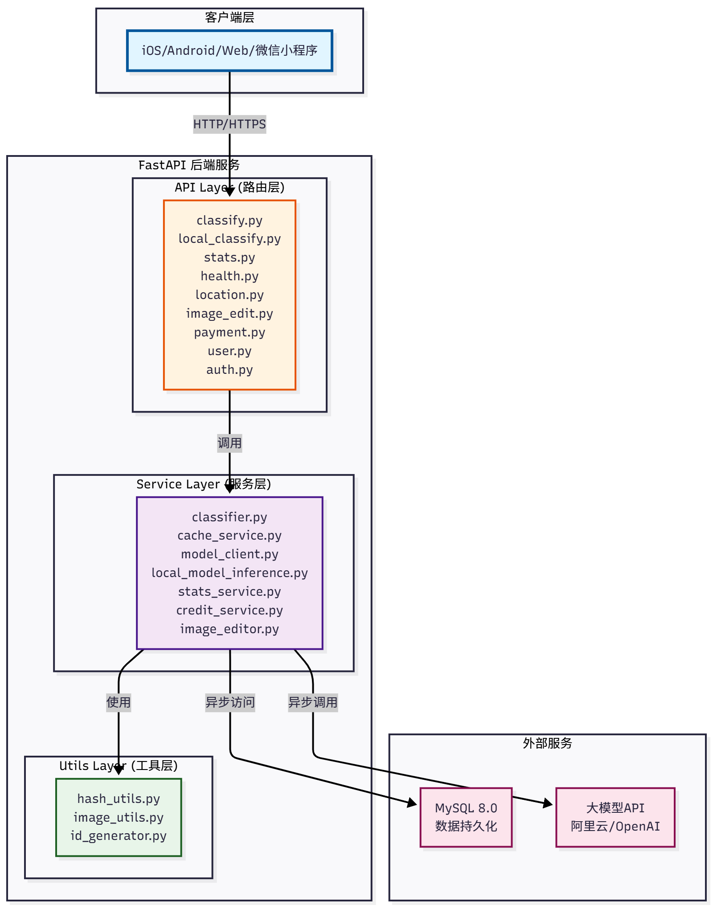
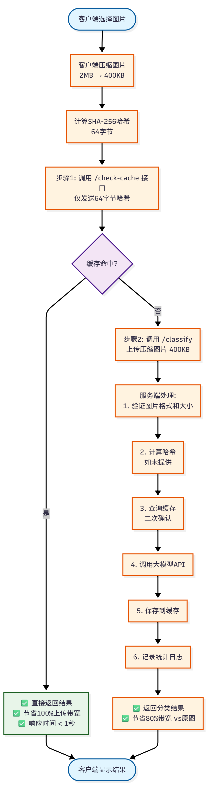
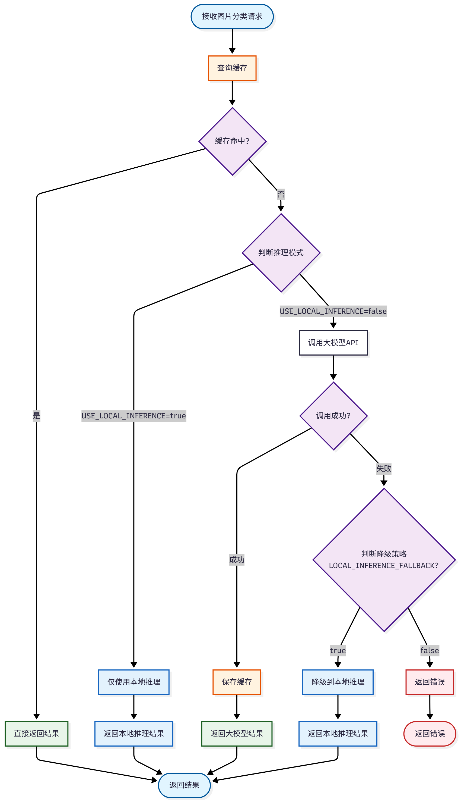

📋 项目概述
项目名称：图片分类后端系统（ImageClassifierBackend）
项目定位：基于大模型技术的智能照片分类服务后端
核心价值：为客户端提供高精度图片分类API，通过智能缓存机制显著降低大模型调用成本
---
🏗️ 技术架构
1. 整体架构
2. 技术栈
#### 后端框架
- FastAPI 0.109.0 - 现代、高性能的异步Web框架
- Python 3.8+ - 编程语言
- Uvicorn - ASGI服务器（开发环境）
- Gunicorn + Uvicorn Workers - 生产环境进程管理器
#### 数据库
- MySQL 8.0+ - 关系型数据库
- aiomysql 0.2.0 - 异步MySQL驱动
- PyMySQL 1.1.0 - MySQL同步驱动（备用）
#### AI技术
- 阿里云通义千问 (DashScope) - 主要大模型服务
- OpenAI GPT-4 Vision - 备用大模型服务
- ONNX Runtime 1.16.3 - 本地模型推理引擎
- YOLOv8 - 物体检测模型（本地推理）
- MobileNetV3 - 图像分类模型（本地推理）
#### 图片处理
- Pillow 10.2.0 - 图片验证、格式转换
- Ultralytics 8.0.200 - YOLO推理库
#### 其他工具
- Pydantic 2.5.3 - 数据验证和序列化
- python-dotenv - 环境变量管理
- loguru - 日志记录
- python-jose - JWT认证
- passlib - 密码哈希
- httpx - HTTP客户端
---
🎯 核心功能模块
1. 图片分类模块
#### 功能描述
- 支持8种预定义分类类别
- 基于大模型的智能分类
- 支持本地模型降级推理
- 混合推理策略（远程优先，失败降级）
#### 分类类别
1. social_activities - 社交活动（聚会、合影、多人互动）
2. pets - 宠物萌照（猫、狗等宠物照片）
3. single_person - 单人照片（个人照、自拍、肖像）
4. foods - 美食记录（食物、餐饮、烹饪相关）
5. travel_scenery - 旅行风景（旅游景点、自然风光）
6. screenshot - 手机截图（手机屏幕截图、应用界面）
7. idcard - 证件照（身份证、护照、驾照等）
8. other - 其它（无法归类到上述类别）
#### 核心接口
POST /api/v1/classify/check-cache- 哈希缓存查询（带宽优化）POST /api/v1/classify- 单张图片分类POST /api/v1/classify/batch- 批量图片分类POST /api/v1/local-classify- 本地模型推理
2. 智能缓存模块
#### 缓存策略
- SHA-256哈希去重 - 基于图片内容的全局缓存
- 全局共享缓存 - 多用户共享，最大化成本节省
- 缓存命中统计 - 详细的缓存效率分析
#### 缓存流程
#### 性能指标
- 缓存命中率：60-80%
- 带宽节省：90%+
- 成本节省：30-50%
3. 混合推理模块
#### 推理策略
1. 优先远程推理 - 使用大模型API（阿里云通义千问/OpenAI）
2. 失败降级 - 大模型失败时自动降级到本地ONNX模型
3. 本地优先模式 - 可配置为仅使用本地推理（节省API成本）
#### 本地模型
- YOLOv8 - 用于物体检测和场景识别
- MobileNetV3 - 用于图像分类
- 身份证检测模型 - 专用证件照识别
4. 统计分析模块
#### 统计维度
- 请求统计 - 总请求数、缓存命中率、处理时间
- 用户统计 - 用户请求分布、活跃度分析
- 分类分布 - 各类别图片数量、占比
- 成本统计 - API调用成本、节省成本
- 性能监控 - 响应时间、成功率
#### 核心接口
GET /api/v1/stats/today- 今日统计GET /api/v1/stats/cache-efficiency- 缓存效率统计GET /api/v1/stats/category-distribution- 分类分布GET /api/v1/stats/users/top- 用户排行榜
5. 图像编辑模块
#### 功能描述
- 基于大模型的图像编辑功能
- 支持多种编辑场景
- 编辑结果缓存机制
- 编辑任务队列管理
6. 支付与会员模块
#### 功能描述
- 微信支付集成
- 会员开通功能
- 额度购买系统
- 用户额度管理
7. 地理位置模块
#### 功能描述
- EXIF GPS信息解析
- 城市识别
- 中文地名映射
---
🔄 核心业务流程
1. 图片分类流程（优化版）
2. 混合推理流程
---
💾 数据存储设计
1. 数据库表结构
#### 核心表
1. image_classification_cache - 分类结果缓存表
image_hash(VARCHAR(64), UNIQUE) - SHA-256哈希category- 分类类别confidence- 置信度description- 图片描述hit_count- 命中次数created_at,last_hit_at- 时间戳
2. request_log - 请求日志表
request_id- 请求唯一IDuser_id- 用户IDip_address- IP地址image_hash- 图片哈希category,confidence- 分类结果from_cache- 是否来自缓存processing_time_ms- 处理耗时inference_method- 推理方法（cache/remote/local）
3. wechat_users - 微信用户表
4. image_edit_tasks - 图像编辑任务表
5. payment_records - 支付记录表
6. user_credits - 用户额度表
2. 存储策略
| 数据类型 | 存储方式 | 保留时长 | 说明 |
|---------|---------|---------|------|
| 原始图片 | ❌ 不存储 | - | 隐私保护 |
| 图片哈希 | MySQL | 永久 | 用于去重缓存 |
| 分类结果 | MySQL | 永久 | 全局共享缓存 |
| 请求日志 | MySQL | 可配置（默认90天） | 统计分析用 |
---
⚡ 性能优化策略
1. 带宽优化
#### 优化方案
- 哈希预查询 - 先发送64字节哈希，命中时无需上传图片
- 客户端压缩 - 图片压缩至400KB左右
- 智能缓存 - 全局共享缓存，避免重复上传
#### 效果
- 带宽节省：90%+
- 响应时间：缓存命中 < 1秒
2. 成本优化
#### 优化方案
- SHA-256哈希去重 - 相同图片只调用一次大模型
- 全局共享缓存 - 多用户共享缓存结果
- 本地推理降级 - 大模型失败时使用本地模型
#### 效果
- 成本节省：30-50%
- 缓存命中率：60-80%
3. 性能优化
#### 优化方案
- 异步架构 - 全异步处理，支持高并发
- 连接池 - MySQL连接池管理
- 批量处理 - 支持批量分类
- 分层处理 - 截图检测→缓存查询→远程推理→本地降级
#### 效果
- 并发能力：100+ QPS
- 响应时间：< 2秒（非缓存）
---
🔐 安全特性
1. 数据安全
- ✅ 用户隔离 - 基于用户ID的数据隔离
- ✅ 隐私保护 - 不存储原始图片
- ✅ 哈希不可逆 - SHA-256无法还原原图
- ✅ HTTPS传输 - 支持HTTPS加密传输
2. 接口安全
- ✅ 输入验证 - 严格的图片格式和大小验证
- ✅ 请求日志 - 完整的API调用审计
- ✅ 权限控制 - 管理后台JWT认证
- ✅ 数据加密 - 敏感数据加密存储
---
📊 监控与运维
1. 健康检查
GET /api/v1/health- 系统健康状态- 数据库连接检查
- 大模型API可用性检查
2. 日志管理
- loguru - 结构化日志记录
- 日志级别 - DEBUG/INFO/WARNING/ERROR
- 日志轮转 - 按大小和时间轮转
- 日志保留 - 可配置保留天数
3. 性能监控
- 请求统计接口
- 缓存效率统计
- 系统状态监控
---
🚀 部署方案
1. 开发环境
2. 生产环境
3. 容器化部署
- Docker + Docker Compose
- 支持Kubernetes部署
4. 反向代理
- Nginx/Caddy作为反向代理
- HTTPS终止
- 负载均衡
---
📈 项目亮点
1. 成本优化
- ✅ 智能缓存机制，节省30-50% API成本
- ✅ 本地推理降级，降低大模型依赖
- ✅ 全局共享缓存，最大化成本节省
2. 性能优化
- ✅ 哈希预查询，节省90%+上传带宽
- ✅ 异步架构，支持高并发
- ✅ 混合推理策略，确保服务可用性
3. 用户体验
- ✅ 缓存命中快速响应（< 1秒）
- ✅ 客户端压缩减少等待时间
- ✅ 智能降级保证服务可用
4. 技术架构
- ✅ 分层架构，职责清晰
- ✅ 无状态设计，支持水平扩展
- ✅ 完善的错误处理和日志记录
---
🔮 扩展方向
1. 短期优化
- [ ] 引入Redis缓存热点数据
- [ ] 实现更完善的用户认证系统
- [ ] 支持更多大模型提供商
- [ ] 优化本地模型推理性能
2. 长期规划
- [ ] 实现实时监控大盘
- [ ] 支持更多分类类别
- [ ] 实现图片相似度搜索
- [ ] 支持视频分类
---
📚 相关文档
- README.md - 项目主文档
- docs/DESIGN.md - 详细设计文档
- docs/DEPLOY.md - 部署指南
- docs/混合推理策略说明.md - 混合推理说明
- 异步架构与高并发技术说明.md - 异步调用时序图和高并发技术详解 ⭐
---
文档版本: v1.0
最后更新: 2025-11-17
维护者: 芯图相册团队